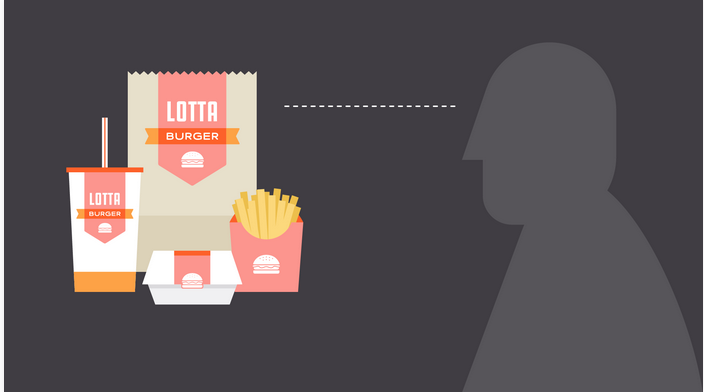

Welcome to CreativeStudio
Your one-stop destination for creative design solutions
Get Started
Hello! My name is Cicilia Zhuo, and I am a passionate graphic designer and content marketer with over five years of experience in the industry. I specialize in creating visually stunning designs and compelling content that engages and captivates audiences.
Throughout my career, I have worked with a diverse range of clients, from startups to established brands, helping them achieve their marketing and branding goals. I have a keen eye for detail and a creative approach to problem-solving, allowing me to deliver high-quality designs and content that resonate with target audiences.
I excel in graphic design, utilizing industry-standard tools such as Adobe Photoshop, Illustrator, and InDesign to create stunning visuals, including logos, branding materials, and promotional graphics.
My expertise in content marketing extends to creating compelling written and visual content that drives engagement and conversion. I am skilled in crafting blog posts, social media content, email campaigns, and more.

Majuri’s version of the book is made up of fifteen booklets, which each contain one of the essay’s informative chapters, making the writing both approachable and enjoyable in short windows of time,” as the designer explains.
Read MoreWork on a publication focusing on Canadian foodd showcases their skills in branding, copywriting, photography, videography, and more. Adding a printed project
Read MorePortugal-based designer Mariana Malhao’s online portfolio is full of playful projects, but this coloring book definitely stands out. Malhao has lent her design skills to a range of projects, from jewelry to ceramics. This coloring book represents her uniquely playful style in a creative way.
Read More
Typeroom dedicates its blog to typography inspiration. It features specific trends in typography, font designers, and the role of lettering in design and society. The posts cover anything from in-depth examinations of particular fonts to interviews with industry experts.
Read MoreWelcome to this page which is dedicated to understanding the essence of graphic design. I'm Cicilia Zhuo, and I'm thrilled to guide you through this journey.
Graphic design is more than just creating visually appealing content. It's about communication, storytelling, and leaving a lasting impression on your audience.
Throughout my career, I've witnessed the transformative power of graphic design. From crafting captivating logos to designing impactful marketing materials, every element plays a crucial role in conveying a message effectively.
Join me as we delve into the world of graphic design, exploring its principles, techniques, and endless possibilities.

If you're interested in further exploring graphic design, here are some recommended readings:
These books offer valuable insights into the theory, practice, and history of graphic design, and they can serve as excellent resources for both beginners and seasoned professionals.
HomeVisual branding is an integral aspect of graphic design, influencing brand perception and recognition.
Branding and visual identity are all around us. Look closely, and you'll find them on websites, product packaging, and different types of advertising. Even personal items, like documents and business cards, bear some form of identity.

Simply put, branding is what other people think—about you, your company, your product, or your service. Visual identity is what that brand looks like, from your logo to your color choices and so much more.
Strong visuals can be very persuasive. Think of your own experiences as a consumer. Have you ever chosen a product simply because you liked the way it looked? Understanding visual identity can help you make more thoughtful design decisions, regardless of your role, medium, or skill level.
Visual identity is kind of like a preview of your brand. Each part of your design is a clue that tells the viewer what they can expect. Your aesthetic can be traditional, modern, or a little more out there—every brand is different. No matter what, all of your design elements work together to show exactly what your brand is about.

Of course, it's not all business. You can apply the concept of identity to almost any type of project, including personal designs. Whether you're updating your resume or looking for ways to enhance your blog, there are many benefits to having a consistent visual style.
Home
I embarked on my graphic design journey with a passion for creativity and visual storytelling. From a young age, I was drawn to art and design, and as I honed my skills, I realized the profound impact that design can have on communication and perception.
After completing my formal education in graphic design, I eagerly entered the industry, eager to apply my knowledge and creativity to real-world projects. Throughout my career, I've had the privilege of working with diverse clients and industries, each presenting unique challenges and opportunities for innovation.
Whether it's crafting a brand identity that resonates with consumers or designing user-friendly interfaces that enhance the digital experience, I am constantly inspired by the possibilities of graphic design. Each project fuels my passion for creativity and drives me to push the boundaries of design excellence.
As I continue on my journey, I am committed to lifelong learning and growth, staying abreast of emerging trends and technologies in the ever-evolving field of graphic design. I am excited to see where this journey takes me and the impact that I can make through the power of design.
HomeTypography is a fundamental aspect of graphic design, encompassing the art and technique of arranging type to make written language legible, readable, and appealing when displayed.
Effective typography can evoke emotions, convey messages, and establish brand identity. It involves careful selection of typefaces, font sizes, line lengths, spacing, and alignment to achieve visual harmony and clarity.

As a graphic designer, understanding typography is essential for creating impactful designs across various media, including print, web, and digital platforms.
By mastering the principles of typography, graphic designers can enhance the clarity, impact, and aesthetic appeal of their designs, effectively communicating with their target audience.
Home